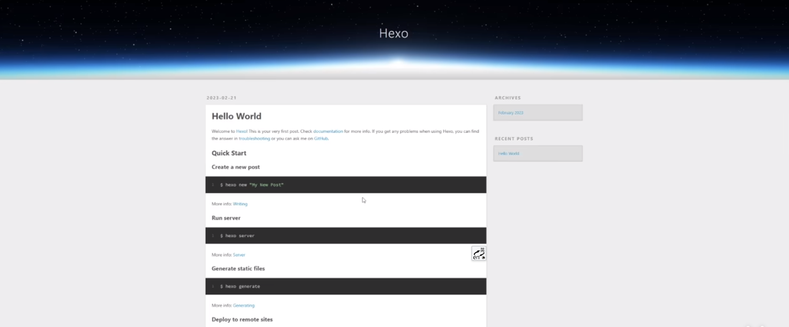
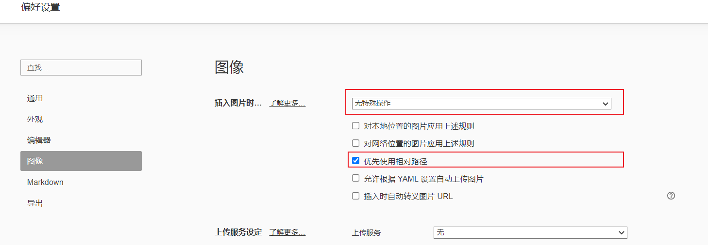
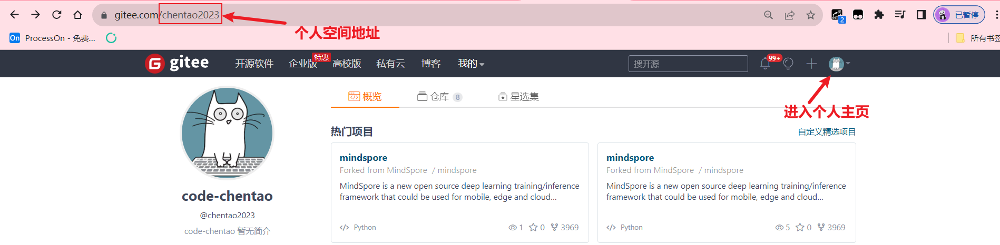
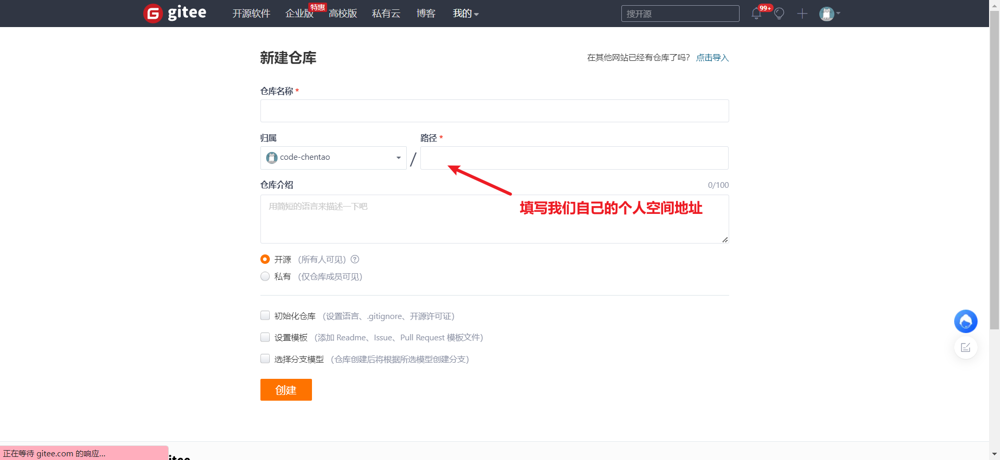
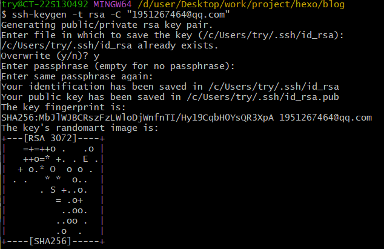
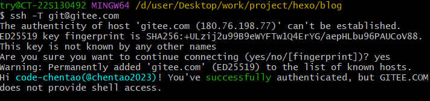
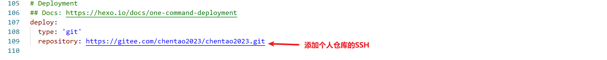

”零“成本个人博客搭建！
”零“成本个人博客搭建！
1. 安装git和node.js
git安装过程无脑下一步就可以，熟悉git的同学也可以根据自己的习惯安装。
在电脑桌面右键看到Git Bash，就说明git安装成功了！
建议下载LTS的版本，这种是长期维护版本，然后无脑下一步。
win + R键输入cmd进入window的命令行窗口，输入node -v就可以查看node的安装版本，证明了我们安装成功了！
2. 安装hexo
hexo是一个快速，简洁且高效的博客框架。
首先到电脑中创建一个我们个人博客的文件夹，比如我创建一个叫hexo的文件夹。在hexo文件夹中右键点击Git Bash，进入git的窗口。
进入hexo的官网，在官网的下方有一键部署的命令，依次在git窗口中执行。
1
2
3
4
5
6npm install hexo-cli -g
hexo init blog
cd blog
npm install
# hexo server也可以简写成hexo s
hexo server在浏览器中打开 http://localhost:4000/ ，出现如下，那么恭喜你，你有自己的个人博客了，但这个博客目前只能在本地访问，还无法联网，让其他人看到。

3. 编辑个人博客
点击进入之前创建的hexo文件中的blog文件中，这个blog文件就是当前个人博客项目的根目录，在此路径下进入git 窗口中。
1 | |
然后我们可以在source/_posts看到这篇文章，进入该md格式的文件中，进行编辑，保存后退出。
1 | |
若你编辑的文章中有图片，发现无法查看到图片，无法渲染。
3.1 hexo图片插入无法显示问题
下载插件
- 进入你博客的根目录，右键单击, 然后选择
git bash here打开 git bash。 - 键入命令
npm install hexo-asset-image --save
修改插件
- 修改blog根目录下的_config.yml
1 | |
修改typora配置
- 在typora偏好设置中将图像改为无特殊操作，只选择优先使用相对路径

创建image文件
- 在/blog/source下创建image文件夹，将你博客的图像资源放入该文件夹中，保持好相对路径，就可以同时在typero和hexo上同时显示图像
4.更改博客样式
来到hexo官网底部，这里有很多种免费的主题
比如进入fluid这个主题，它有文档告诉我们如何获取主题。
1. 搭建 Hexo 博客
如果你还没有 Hexo 博客，请按照 Hexo 官方文档 进行安装、建站。
2. 获取主题最新版本
方式一：
Hexo 5.0.0 版本以上，推荐通过 npm 直接安装，进入博客目录执行命令：
1 | |
然后在博客目录下创建 _config.fluid.yml，将主题的 _config.yml 内容复制进去。
方式二：
下载 最新 release 版本 解压到 themes 目录，并将解压出的文件夹重命名为 fluid。
3. 指定主题
如下修改 Hexo 博客目录中的 _config.yml：
1 | |
4. 创建「关于页」
首次使用主题的「关于页」需要手动创建：
1 | |
创建成功后，编辑博客目录下 /source/about/index.md，添加 layout 属性。
修改后的文件示例如下：
1 | |
注意！！！
每次配置完，我们都执行如下命令：
1 | |
5. 注册gitee账号创建仓库
注册账号后实名认证
注册完gitee账号后，去账号管理中进行实名认证，否则无法开启Gitee Pages服务，也就无法让其他人通过互联网访问我们的博客了。
创建仓库
点击右上角的头像进入我们的个人主页，个人主页域名的最后面是我们自己的个人空间地址如下图所示：

然后点击右上角的+号添加个人仓库，添加完相关信息后就创建了我们自己的个人仓库。

6. 将自己的博客上传到Gitee中
git全局设置：
1 | |
然后到gitbash中输入ssh-keygen -t rsa -C "1951267464@qq.com",输入三个回车

输入cat ~/.ssh/id_rsa.pub获取密钥，然后复制显示的密钥，
点个人设置-》左侧的SSH公钥->将公钥添加进去
ssh -T git@gitee.com 返回successfully说明公钥配置成功

然后进入个人博客根目录打开_config.yml文件，滑到最底端

然后打开git窗口输入npm install hexo-deployer-git --save运行完之后才能将博客部署到gitee中
之后你可以：
1 | |
之后点击gitee的管理，让你的项目开源
点击服务，开启 gitee pages服务，开启强制使用HTTPS点击启动，这样就可以让别人访问你的博客啦。